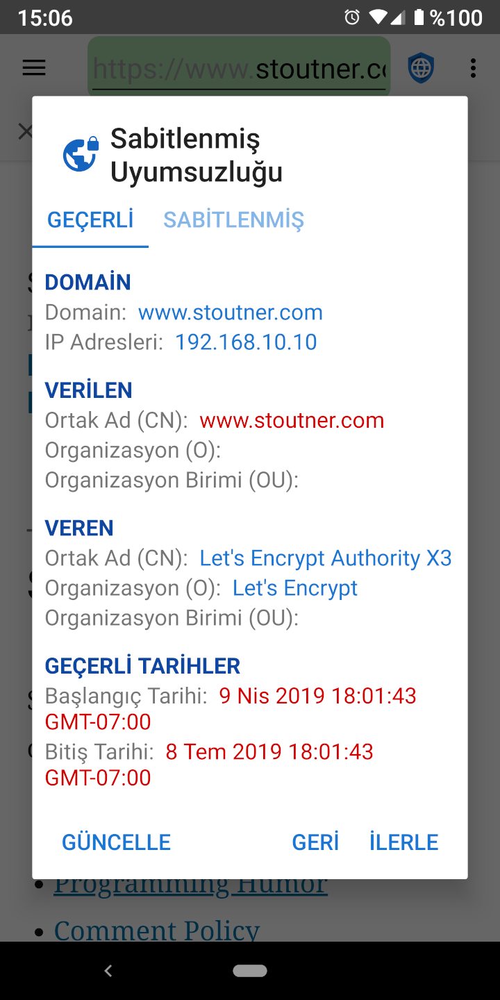
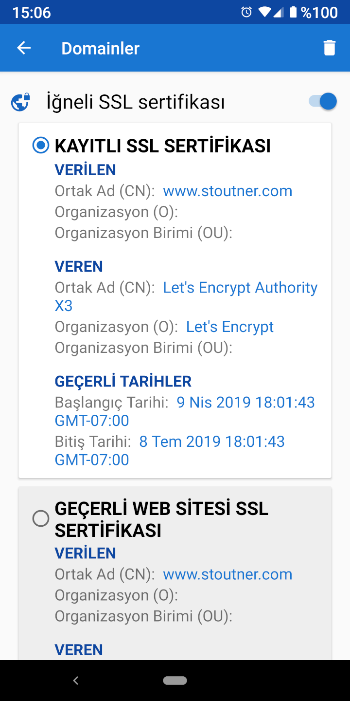

Güvenle Bağlanma Güvenle Bağlanma
Güvenle Bağlanma Güvenle BağlanmaŞifrelenmiş bir URL’yi (HTTPS ile başlayan) ziyaret ederken, web sunucusu hem tarayıcıya gönderilen bilgileri şifrelemek hem de sunucuyu tanımlamak için bir SSL sertifikası kullanır. Sunucu tanımlamasının amacı, tarayıcı ile web sunucusu arasında konumlanan bir makinenin, sunucu gibi davranmasını ve nakledilen bilgilerin şifresini çözmesini önlemektir. Bu saldırı türü Man In The Middle (Ortadaki Adam, MITM) saldırısı olarak bilinir. SSL sertifikaları, sertifika otoriteleri tarafından oluşturulur, bu otoriteler, bir sunucunun kimliğini doğrulayan ve bir ücret karşılığında sertifika üreten şirketler topluluğudur. Android, güvenilir sertifika otoritelerinin bir listesine sahiptir, ve herhangi bir web sitesi için bu sertifikalardan herhangi birini kabul edecektir. Normal koşullarda, bir kuruluşun kontrol edemediği bir domain için SSL sertifikası alması mümkün değildir, fakat gerçekte, birçok hükümet ve büyük şirket bunu rahatlıkla yapabilir.
Bir SSL sertifikası sabitlemek, tarayıcıya, özel bir domain için belirli bir SSL sertifikasına güvenebileceğini söyler. Geçerli olsa dahi, diğer sertifikalar reddedilecektir.

SSL sertifikalarının belirli bir tarihte süresi dolması sebebiyle, sabitlenmiş dahi olsa, SSL sertifikalarının yasal olarak zaman zaman güncellenmesi gerekir. Genel bir kural olarak, çoğu durumda SSL sertifikalarını sabitlemeye gerek yoktur. Ancak, bazı güçlü kuruluşların onları hedef aldığından şüphelenenler için SSL sertifikası sabitlemek bir MITM saldırısını algılayıp engelleyebilir. Privacy Browser, aynı zamanda IP adreslerini de sabitleyebilir.

SSL sertifikaları Domain Ayarlarından sabitlenebilir. MITM saldırılarına karşı korumanın yanı sıra, kablosuz bir router veya erişim noktası gibi bir cihaz için kendiliğinden imzalı bir sertifikayı sabitlemek, web sitesinin her yüklenmesinde normal olarak gösterilen hata mesajını kaldıracaktır. Aktif sekmeye dokunmak, geçerli web sitesinin SSL sertifikasını gösterir.